Hogyan használd a Kódfejtő Műhelyt?
Ez az oldal arra jó, ha otthon gyakorolnál, de nem emlékszel pontosan, mit csináltunk az órán. Itt mindent megtalálsz: mi hol van, melyik gomb mire való, mit jelentenek a jelek és a számok.
A képeken a piros számok ugyanazok, mint a kép alatti listában.
Mi hol van?
Az oldal tetején, a menüben hat rész van. Bármelyikre kattinthatsz, bármikor.
| Menüpont | Mire való? |
|---|---|
| Főoldal | A küldetés-térkép: látod, hol tartasz, mi jön, és milyen jelvényeket szereztél. |
| Küldetések | Az órák anyaga: a titkos szabályok, a program soronként elmagyarázva és egy mini kihívás. Lent vannak a gyakorló feladatok is. |
| Pálya | A virtuális pálya. Itt írod meg és futtatod a programot robot nélkül. Ez a legfontosabb rész. |
| Szótár | Az összes parancs egy helyen, blokkal és Pythonban egymás mellett. |
| Játékok | Rövid fejtörők: kitalálni, hova megy a robot, mennyit forduljon, hol a hiba. |
| WRO | Minden a robotversenyről: mi az, hogyan zajlik, mit gyakorolj hozzá. |
| Súgó | Ez az oldal. |
Belépés a kép-kódoddal
Jelszó helyett 3 képet kell megnyomnod, sorban. Ezt a kártyát a tanárodtól kaptad.
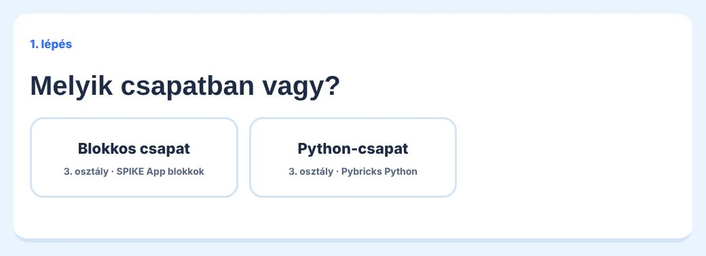
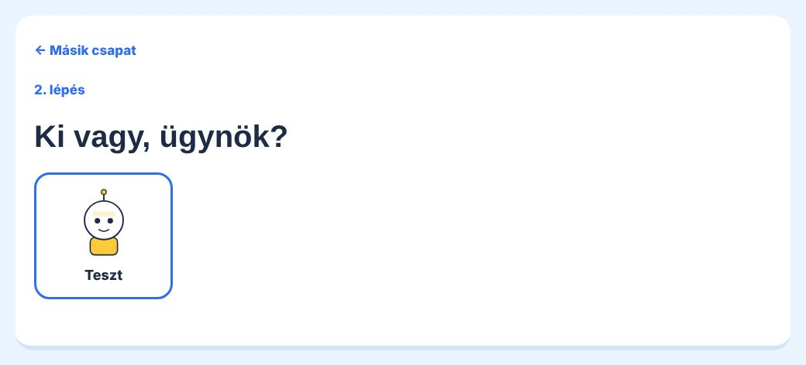
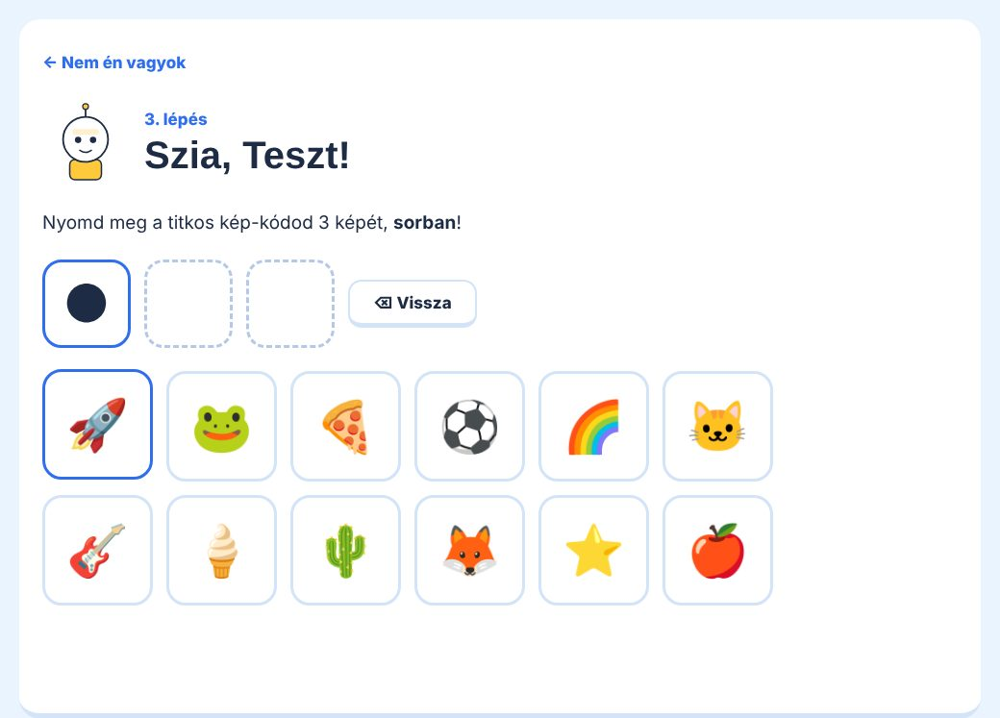
- Ha elnyomtad, a ⌫ Vissza gomb törli az utolsó képet.
- Ha többször rosszul próbálkozol, a belépés egy kis időre lezár. Várj, aztán próbáld újra.
- Ha elfelejtetted a kép-kódodat, szólj a tanárodnak: ő meg tudja nézni.
- Kilépés: kattints jobb fent az avatárodra, és nyomd meg a Kilépek gombot. Közös gépen mindig lépj ki a végén!
Főoldal: a küldetés-térkép
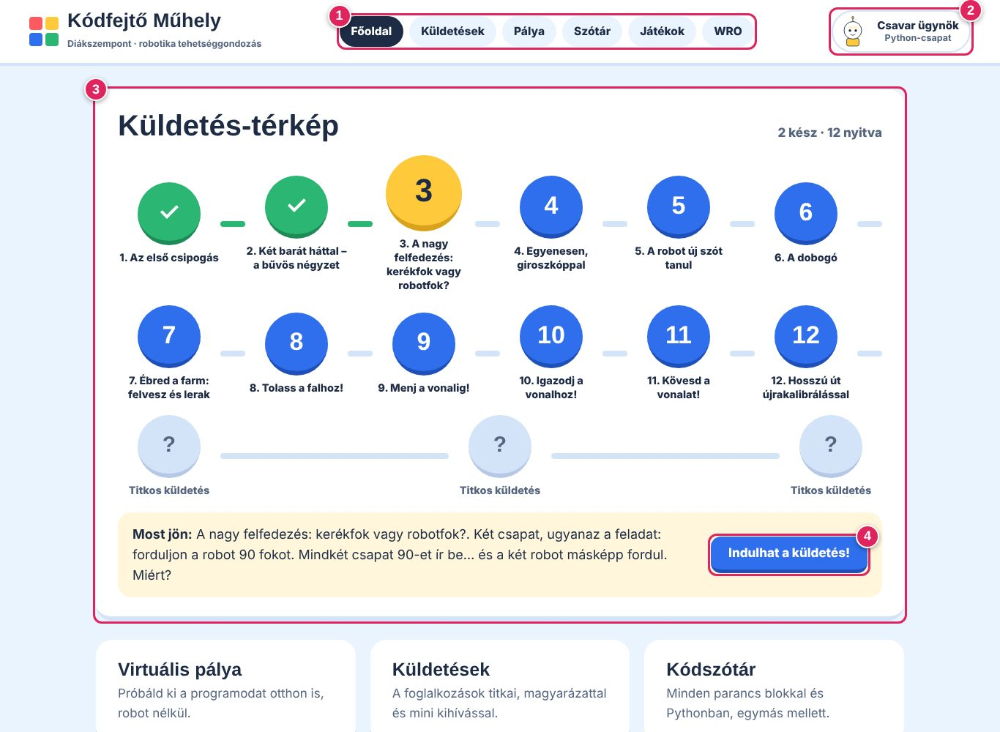
- Menü. Innen jutsz el minden részhez. A sötét gomb mutatja, hol vagy most.
- Az avatárod. Rákattintva beállíthatod a csapatodat (blokkos, Python, haladó) és a robotfigurád kinézetét. Itt van a Kilépek gomb is. A csapat azért fontos, mert ettől függ, hogy blokkot vagy Pythont mutat az oldal.
- Küldetés-térkép. Minden kör egy óra. A zöld pipa: kész. A sárga: ez jön most. A kék: már nyitva van. A szürke kérdőjel: titkos, majd a tanárod nyitja meg.
- Indulhat a küldetés! Egyenesen a következő küldetéshez visz.
Lejjebb vannak a jelvényeid. Egy jelvényt akkor kapsz meg, ha egy küldetés végén megnyomod a Teljesítettem! gombot.
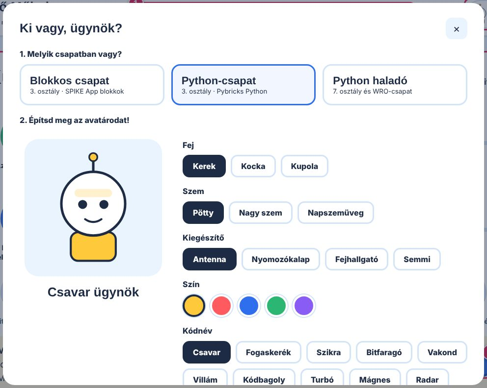
Küldetések
Minden küldetés egy foglalkozás anyaga. Ha nem emlékszel, mit tanultunk, először ide nézz.
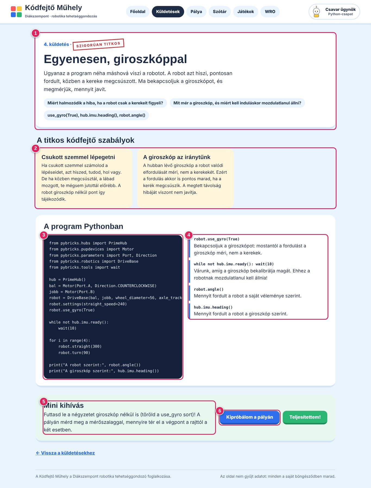
- A küldetés története, és hogy mit tanulsz benne (a kék címkék).
- A titkos kódfejtő szabályok. Ezek a legfontosabb gondolatok, amiket meg kell jegyezni.
- A program. Ez az a program, amit az órán megírtunk. A blokkos csapat blokkokat lát, a Python-csapat Python-kódot.
- Magyarázat soronként. Mindegyik sorról leírja, mit csinál, és miért kell.
- Mini kihívás. Egy kis feladat, amivel otthon gyakorolhatsz.
- Kipróbálom a pályán: megnyitja a virtuális pályát, és betölti ezt a programot. Ha kész vagy, nyomd meg a Teljesítettem! gombot: megkapod a jelvényt.
Gyakorló feladatok
A Küldetések oldal alján van 8 gyakorló feladat az alapmozgásokhoz (előre, fordulás, célba érés, hazajövés). A csillagok a nehézséget jelzik: ★ könnyű, ★★ közepes, ★★★ nehéz. Ha rákattintasz, a pálya nyílik meg a feladattal. Részletesen lent olvashatsz róluk.
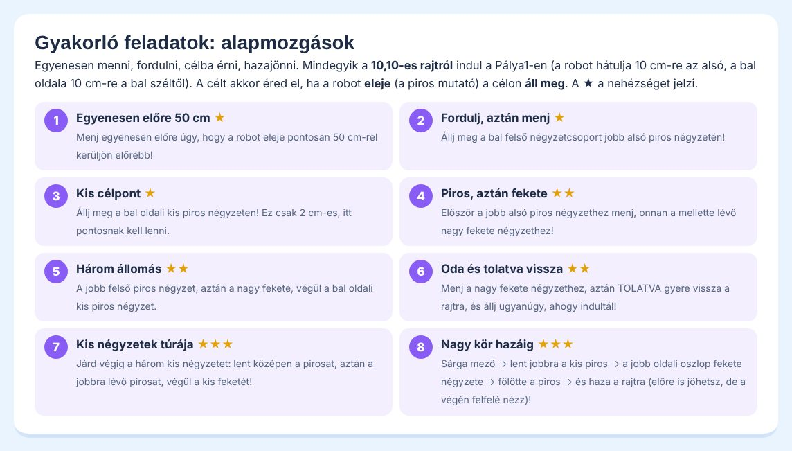
A virtuális pálya
Itt írod meg a programot, és megnézed, mit csinálna vele a robot. Ugyanaz a program fut, amit a valódi robotra is feltöltesz.
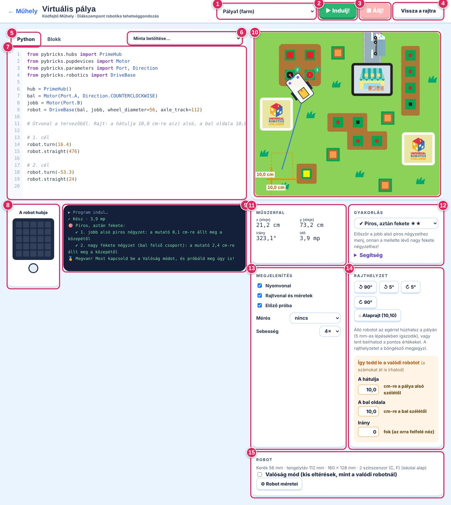
- Pályaválasztó. Pálya1 (a farm), Pálya2, a házi WRO-pálya, a rajzlap (ott a robot tollal rajzol) és az Edzőpálya (WRO-méretű, falakkal és vonalakkal az igazodáshoz).
- Indulj! Elindítja a programot. Az első betöltés pár másodpercig tart, addig a gomb szürke.
- Állj! Megállítja a futó programot.
- Vissza a rajtra. A robotot visszateszi a rajthelyére. Az előző út halványan megmarad, hogy össze tudd hasonlítani.
- Python / Blokk fül. Itt váltasz a kétféle programozás között.
- Minta betöltése. Kész mintaprogramok a küldetésekből. A lista elején: ▢ Üres program (csak az alap), ↩ A legutóbbi programom ezen a gépen, és ha máshol is dolgoztál, ☁ A legutóbb mentett programom (amit utoljára elindítottál, bármelyik gépen). Ha véletlenül lecserélted a programodat, a Ctrl + Z visszahozza.
- A szerkesztő. Ide írod a programot (vagy ide húzod a blokkokat). Amikor megnyitod a pályát, itt csak az alap van, ami minden programhoz kell: Pythonban az importok, a
hub, a két motor és arobot = DriveBase(…), blokkban a motorpár, az 1 fordulat hossza és a sebesség. A kerékméretet és a tengelytávot a Robot méretei ablakból veszi. Futás közben kiemeli azt a sort vagy blokkot, amelyiknél a robot éppen tart. - A robot hubja. A hub kijelzője (5×5 pötty) és a középső gomb fénye. Amit a programod kiír vagy kigyújt, itt látod.
- Konzol. Itt üzen a robot: hibák, tippek, eredmények. A jelek magyarázata lent van.
- A pálya. Felülnézetből látod a robotot. A kék vonal az útja, a narancs szaggatott keret a rajthelye. A piros pöcök a robot eleje: ezzel „mutat” a robot, ennek kell a célba érnie.
- Műszerfal. Hol van a robot eleje (x, y centiméterben a pálya bal alsó sarkától), merre néz (irány fokban), és mennyi ideje megy.
- Gyakorlás. Itt választasz gyakorló feladatot. A célok megszámozva megjelennek a pályán.
- Megjelenítés. Nyomvonal, rajtvonal, előző próba be- és kikapcsolása, a mérőeszközök és a lejátszás sebessége (1×, 2×, 4×).
- Rajthelyzet. Hova tedd le a robotot. Részletesen lent.
- Robot. A robot méretei és a Valóság mód. Részletesen lent.
robot.turn(90) jobbra, robot.turn(-90) balra.Blokkos programozás
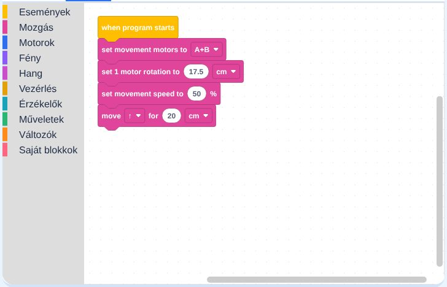
Bal oldalt a színes kategóriák vannak (Események, Mozgás, Motorok…), pont úgy, mint a SPIKE appban. Kattints egy kategóriára, és húzd át a blokkot a munkaterületre, a sárga when program starts alá.
A program eleje mindig ugyanaz: megmondjuk, melyik két motor visz (A+B), mennyit tesz meg a robot egy kerékfordulattal (az iskolai robotnál 17,6 cm, mert a kerék kerülete π × 5,6 cm). Ezt az oldal magától beírja a Robot méretei alapján, és milyen gyorsan menjen.
Blokkot törölni: húzd vissza a bal oldali sávba, vagy jelöld ki, és nyomd meg a Delete gombot.
Rajthelyzet: hova tedd le a robotot?
A szimulátor csak akkor mutatja meg, mit csinál a valódi robot, ha ugyanonnan, ugyanúgy indul. Ezért a rajtot mindig kimérjük.
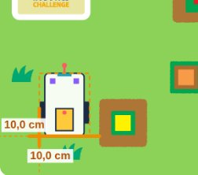
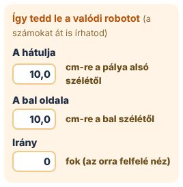
Az alaprajt: 10,10
Hacsak a feladat mást nem mond, a robot mindig a 10,10-es rajtról indul:
- a robot hátulja 10 cm-re van a pálya alsó szélétől,
- a robot bal oldala 10 cm-re van a pálya bal szélétől,
- a robot felfelé néz (0°).
Ha elmozdítottad a robotot, a ⌂ Alaprajt (10,10) gomb visszateszi ide.
Így tedd le a valódi robotot
- Tegyél egy vonalzót a pálya alsó széle mellé, merőlegesen. Mérj fel 10 cm-t, és ide igazítsd a robot hátulját (a leghátsó részét).
- Ugyanígy mérj 10 cm-t a bal szélétől, ide igazítsd a robot bal oldalát (a legszélső részét, nem a kereket!).
- Nézd meg felülről, hogy a robot egyenesen áll-e. Egy fok ferdeség 1 méteren már majdnem 2 cm eltérés!
- Ne told meg a robotot indításkor: a gombot óvatosan nyomd meg.
Más rajt beállítása
- Egérrel: fogd meg az álló robotot a pályán, és húzd el. 5 mm-es lépésekben igazodik, hogy könnyű legyen kimérni.
- Forgatás: a ↺ 90°, ↺ 5°, ↻ 5°, ↻ 90° gombokkal.
- Billentyűzettel: írd be a számokat a narancs dobozba (centiben, tizedesvesszővel is: 12,5), és nyomj Enter-t. Az irányhoz fokot írj (0 = felfelé, 90 = jobbra…).
A robot méretei és a Valóság mód
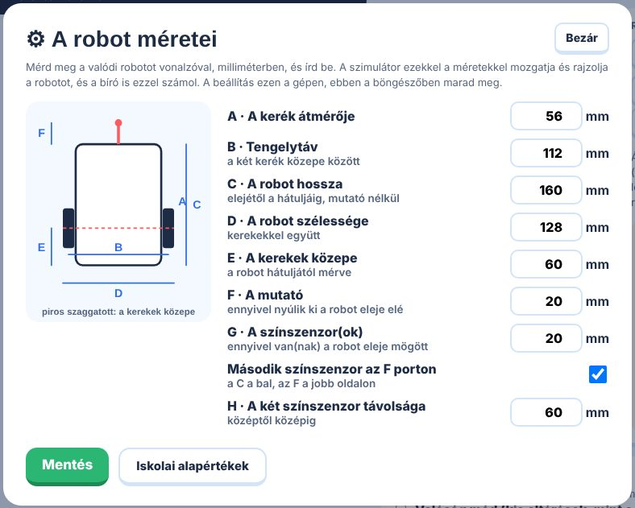
A ⚙ Robot méretei gombbal nyílik. Itt adjuk meg, mekkora a mi robotunk. Az órán egyszer kimértük, utána nem kell hozzányúlni. Az iskolai robot (Driving Base 2) alapértékei vannak beírva; az Iskolai alapértékek gomb ezeket hozza vissza.
| Betű | Mit jelent? |
|---|---|
| A | A kerék átmérője (56 mm). Ettől függ, mennyit megy előre a robot egy kerékfordulattal. |
| B | Tengelytáv: a két kerék közepe közti távolság (112 mm). Ettől függ, mennyit fordul a robot. Ha a valódi robot rosszul fordul, általában ez az oka. |
| C, D | A robot hossza és szélessége a legszélső pontoktól mérve. |
| E | A kerekek közepe milyen messze van a robot hátuljától. |
| F | A piros mutató: mennyivel nyúlik ki a robot eleje elé. A célokhoz mindig ennek a végét visszük. |
| G, H | Hol vannak a színszenzorok: milyen messze a robot elejétől, és (ha kettő van) milyen messze egymástól. |
wheel_diameter=… és axle_track=… értékét, blokkban az „1 motor rotation” centijét. A betöltött minták is ezekkel jönnek. Ha kézzel más számot írsz a programba, a konzol 💡 jellel szól.Valóság mód
A szimulátor robotja tökéletes. A valódi nem az: a kerekek kicsit eltérnek, a robotot sosem tesszük le pontosan egyenesen. Ha bekapcsolod a Valóság módot, minden futásnál kicsit más lesz a robot, mint a valóságban. A konzol 🎲 jellel kiírja, mennyi volt az eltérés. Így kipróbálhatod, hogy a programod mennyire biztos: ha 5 futásból 5-ször célba ér, jó eséllyel a valódi robot is célba ér.
Mérőeszközök
A Megjelenítés panelen, a Mérés menüben választod ki őket. Egyszerre egy működik. Ha végeztél, állítsd vissza „nincs”-re.
📏 Mérőszalag
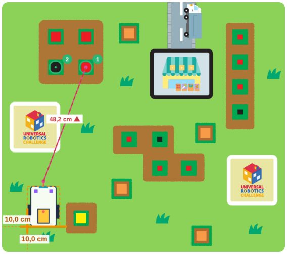
Kattints két pontra: kiírja, hány centi a távolságuk. Ha az első kattintás a robot elejének (a piros pöcöknek) a közelébe esik, a mérőszalag rátapad, és a robottal együtt mozog.
📐 Szögmérő
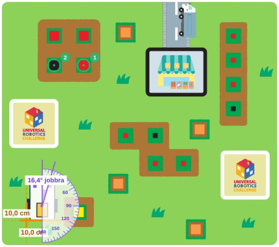
Három kattintás: először a szög csúcsára (forduláshoz a robot közepére, a két kerék közé), aztán az egyik szárára (amerre most néz), végül a másikra (amerre néznie kell). Kiírja a szöget, és hogy jobbra vagy balra kell-e fordulni.
A Mennyit fordult a robot? gomb a robotra teszi a szögmérőt: megmutatja, mennyit fordult el a rajthoz képest.
🎯 Célzás
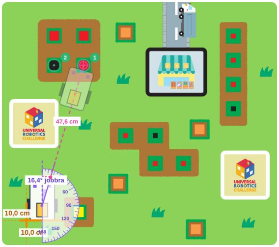
Kattints oda, ahová a robot elejének el kell jutnia. Kiírja: „Fordulj ennyit, aztán menj előre ennyit.” Halványan megmutatja azt is, hol áll majd a robot.
🧭 Útvonaltervező
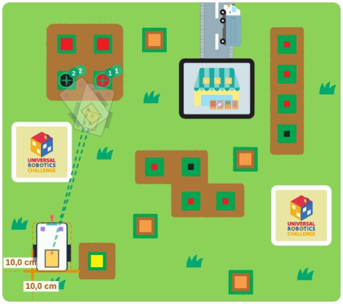
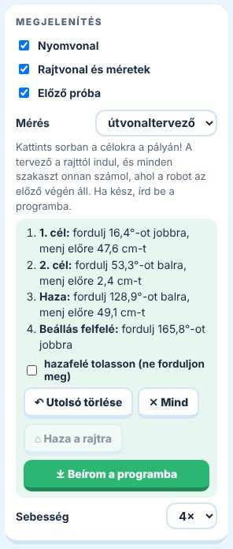
- Válaszd a Mérés → útvonaltervező menüpontot.
- Kattints sorban a célokra a pályán. Minden kattintás egy újabb szakasz: egy fordulás és egy egyenes. A zöld szaggatott vonal mutatja az utat, a halvány robotok azt, hol áll meg.
- A tervező mindig a rajttól indul, és minden szakaszt onnan számol, ahol a robot az előzőnek a végén áll. Így nem tévedsz el a második-harmadik szakasznál.
- Ha a robotnak vissza kell jönnie, nyomd meg a ⌂ Haza a rajtra gombot. Ilyenkor a végén vissza is fordul felfelé. Ha bepipálod a hazafelé tolasson négyzetet, nem fordul meg, hanem tolatva jön vissza.
- Rossz helyre kattintottál? ↶ Utolsó törlése, vagy ✕ Mind.
- Ha kész, nyomd meg a ⤓ Beírom a programba gombot. A tervező megírja a programot: Pythonban
robot.turn()ésrobot.straight()sorokat, blokkban fordulás- és mozgásblokkokat. A mostani programodat lecseréli, de előtte megkérdezi.
Gyakorló feladatok
Rövid feladatok az alapmozgásokhoz a Pálya1-en. Egyre nehezebbek: egy célpont, aztán kettő, három, végül egy nagy kör hazáig.
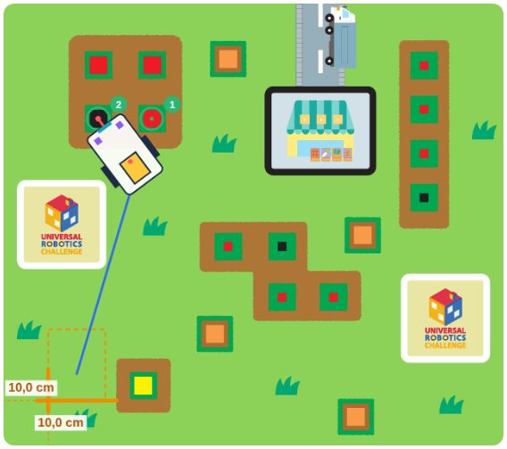
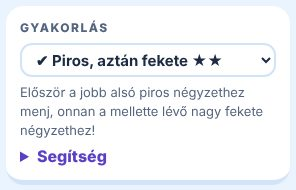
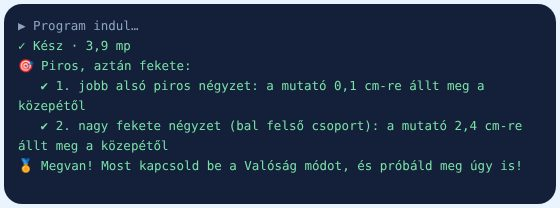
A szabályok
- Mindegyik feladat a 10,10-es rajtról indul. Amikor kiválasztod, a robot oda áll.
- A célokat sorban kell elérni: előbb az 1-est, aztán a 2-est…
- Egy cél akkor számít, ha a robot eleje (a piros pöcök) a karikán belül megáll. Ha csak átsuhan rajta, az nem ér. Elég, ha egy pillanatra megáll (például két parancs között).
- A nagy négyzeteknél 2,5 cm, a kicsiknél 1,5 cm a megengedett eltérés a közepétől.
- A ⌂ jel azt jelenti: vissza a rajtra. Ilyenkor a robotnak ugyanott és ugyanúgy (felfelé nézve) kell megállnia, ahonnan indult: legfeljebb 2 cm és 5° eltéréssel.
- Futás után a konzol soronként kiírja: ✔ elérted, ✘ nem érted el, és hogy milyen messze álltál meg.
- Ha mindet elérted, 🏅 jelet kapsz, és a feladat mellé pipa kerül. Utána próbáld meg Valóság módban is!
Mit ír ki a robot? (a konzol jelei)
| Jel | Mit jelent? |
|---|---|
| ▶ | A program elindult. |
| ✓ Kész | A program végigfutott, és ennyi másodpercig tartott. |
| ■ | Te állítottad meg az Állj! gombbal. |
| piros szöveg | Hiba. A robot nem értette a programot. Kiírja, melyik sorban akadt el (a szerkesztőben ez a sor pirosan látszik), és magyarul elmagyarázza, mi lehet a baj. A leggyakoribb: elírt szó, hiányzó zárójel vagy kettőspont, rossz behúzás. |
| 💡 | Tipp. Nem hiba, de gyanús. Például megírtál egy saját parancsot (def), de sehol nem hívtad meg, vagy lemaradt a zárójel a hívás végéről. Vagy a programban más kerékméret szerepel, mint a robot beállításaiban. |
| 🎯 | A küldetés vagy a gyakorló feladat célja: sikerült-e, és ha nem, mennyivel ment mellé. |
| 🏅 | Minden célt elértél. |
| 🎲 | Valóság mód: ennyivel tért el most a robot a tökéletestől (kerekek, tengelytáv, letevés). |
| ⚖ | A házi WRO-pálya bírója: mit csinált jól vagy rosszul a robot (pl. nem a rajtmezőben állt). |
| 🏁 | A házi WRO-futam pontszáma. |
| 📜 📖 | Betöltöttem egy küldetés vagy a Szótár egyik példáját. |
| 🧭 | Az útvonaltervező üzenete. |
| ⌂ ⚙ | A rajt vagy a robot beállításai megváltoztak. |
Így csináltuk az órán (lépésről lépésre)
Ezt a sorrendet követtük, amikor a szimulátorban megírt programot a valódi robottal próbáltuk ki. Otthon az 1–6. lépést tudod megcsinálni.
- A robot méretei. Egyszer kimértük a robotot, és beírtuk a ⚙ Robot méretei ablakba. (Ha nem változott a robot, ezt már nem kell.)
- Rajt. A robot a 10,10-es rajton áll. Ha nem, nyomd meg a ⌂ Alaprajt (10,10) gombot.
- Cél kiválasztása. Kinéztünk egy pontot a pályán (vagy kiválasztottunk egy gyakorló feladatot).
- Tervezés. Egy célhoz a célzás, több célhoz az útvonaltervező: kattints a célokra, aztán Beírom a programba.
- Próba a szimulátorban. Indulj! Ha nem talál, nézd meg a konzolt: mennyivel ment mellé, és merre.
- Próba Valóság módban. Kapcsold be, és futtasd le 3–5-ször. Ha mindig célba ér, a program jó.
- Átvitel a valódi robotra (lásd lent), és ugyanarról a rajtról, ugyanígy lerakva elindítjuk.
- Összevetés. Megmérjük, hol állt meg a valódi robot eleje. Ha több próbánál is ugyanarra csúszik el, az a robot hibája (pl. tengelytáv), azt javítjuk. Ha mindig máshova, az a letevés vagy a csúszás.
Átvitel a valódi robotra
Python-csapat (Pybricks)
- A virtuális pályán jelöld ki a programot a szerkesztőben (Ctrl + A), és másold ki (Ctrl + C).
- Nyisd meg a code.pybricks.com oldalt Chrome-ban vagy Edge-ben, és csatlakozz a hubhoz Bluetooth-on (a hubon a Pybricks rendszer fut).
- Illeszd be a programot (Ctrl + V), és indítsd el.
Blokkos csapat (SPIKE App)
A blokkokat nem lehet átmásolni: a SPIKE appban ugyanazokat a blokkokat ugyanígy kell összerakni. Ezért a blokkos szerkesztőnk pontosan a SPIKE app blokkjait használja, ugyanazokkal a feliratokkal.
wheel_diameter és az axle_track (Python), illetve a „set 1 motor rotation to … cm” (blokk) értéke egyezzen a valódi robottal. A bal motor az A, a jobb a B kapuban legyen.Szótár, játékok, WRO
Szótár
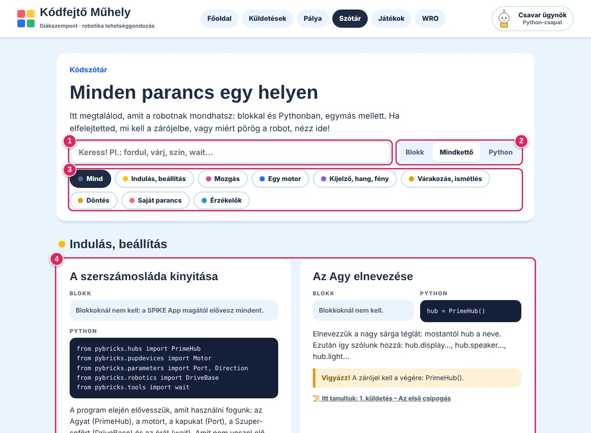
- Keresés. Írd be, mit keresel (pl. „fordul”, „várj”, „szín”).
- Blokk / Mindkettő / Python. Csak az egyiket mutassa, vagy mindkettőt egymás mellett.
- Témák. Kattints egy témára, és csak azok a parancsok maradnak.
- Egy parancs kártyája: blokk és Python, rövid magyarázat, egy sárga „Vigyázz!” a gyakori hibáról, és hogy melyik küldetésben tanultuk. A Kipróbálom gomb megnyitja a pályán.
Játékok
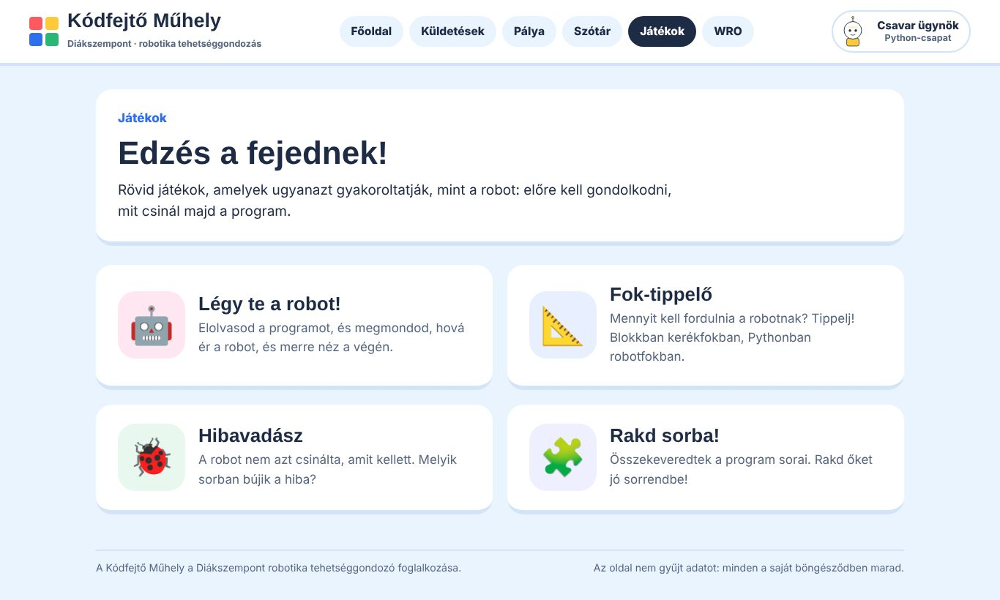
- Légy te a robot! Elolvasod a programot, és megmondod, hová ér a robot.
- Fok-tippelő: mennyit kell fordulni? Blokkban kerékfokban, Pythonban robotfokban.
- Hibavadász: melyik sorban bújik a hiba?
- Rakd sorba! Összekevert programsorok helyes sorrendje.
A játékok gép nélkül is jók: ugyanazt gyakorolják, amit a robottal csinálunk.
WRO
A WRO oldalon megtalálod, mi a World Robot Olympiad, hogyan zajlik egy verseny, mik a legfontosabb szabályok, és hogyan gyakorolhatsz otthon a házi WRO-pályán (a pályaválasztóban: „Házi WRO: Ébred a farm”).
Gyakori kérdések
Nem indul a program, szürke az Indulj! gomb.
Az első megnyitáskor a böngésző letölti a Pythont, ez lassabb neten fél percig is eltarthat. Várj egy kicsit. Ha nagyon sokáig nem jön, frissítsd az oldalt (F5).
Eltűnt a programom!
Amikor megnyitod a pályát, mindig az alapprogrammal indul. Amin legutóbb ezen a gépen dolgoztál, azt a Minta betöltése → ↩ A legutóbbi programom ezen a gépen hozza vissza. Ha másik gépen dolgoztál, a ☁ A legutóbb mentett programom pontot válaszd: ez az, amit utoljára elindítottál. Ha mintát töltöttél be, a Ctrl + Z visszahozza. A tárhelyre minden futtatáskor (Indulj!) mentődik.
A robot a szimulátorban célba ér, a valóságban nem.
Nézd végig ezt a listát, sorban:
- Ugyanonnan indult? Mérd ki újra a rajtot: hátulja 10 cm, bal oldala 10 cm, egyenesen. A legtöbb hiba itt van.
- Ugyanaz a program? Pont azt töltötted fel, amit a szimulátorban futtattál?
- Mindig ugyanarra megy mellé? Akkor a robot beállítása tér el: ha a fordulások rosszak, a tengelytáv (B); ha a távolságok, a kerék átmérője (A).
- Mindig máshova megy? Akkor a letevés, a csúszás vagy a túl nagy sebesség az oka. Lassíts, és tedd le pontosabban.
- Az első szakasz jó, a második után eltéved? Szinte mindig az a baj, hogy a második szakaszt nem onnan számoltuk, ahol a robot az első után áll, hanem a rajttól. Használd az útvonaltervezőt, az ezt jól csinálja.
- Jó irányba fordult? Pythonban a pozitív szög jobbra, a negatív balra fordít. Blokkban a „right” jobbra.
Miért fordul a blokkos robot csak feleannyit?
Mert a blokkos „degrees” a kerék fordulását jelenti, nem a robotét. 90°-os robotforduláshoz kb. 180 kerékfok kell. Pythonban a robot.turn(90) viszont tényleg 90°-ot fordít.
Mit jelent a „robot eleje” vagy a „mutató”?
A piros pöcök a robot előtt. A célokhoz mindig ezt visszük, és a műszerfal x, y értéke is ennek a helyét mutatja. A robot közepe (a két kerék között) ennél hátrébb van, ezért fordul el a robot eleje fordulás közben.
Hogyan kapok jelvényt?
A küldetés oldalán, a mini kihívás mellett nyomd meg a Teljesítettem! gombot. A gyakorló feladatokért nem jár jelvény, de pipát kapnak a listában.
Nem látok egy küldetést, csak kérdőjelet.
Az még titkos: a tanárod nyitja meg, amikor sorra kerül.
Telefonon is működik?
Megnyílik, de a programozáshoz kicsi a képernyő. Számítógépen vagy tableten, billentyűzettel a legkényelmesebb.